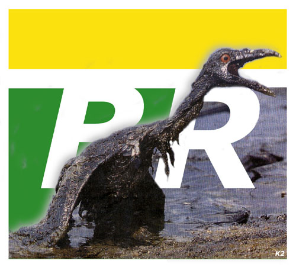

[_Importante_]

# Petrobras, um belo exemplo de destruição,
ambição, incopetência, etc.
# Vários incidentes concluidos em
derramamento de óleo em mares de todo o mundo.
# Milhões de animais mortos.
# Milhões de dollares/reais jogados
fora.
# Milhões de litros de água
contaminados.
# Tudo isso resolvido com uma multa.
# Ou não? E os animais mortos, voltaram
com a multa?
# Os milhões de dollares e reais voltaram
com a multa?
# Os mares foram descontaminados com a multa?
# Infelizmente não. Infelizmente não
é tão fácil.
# A multa foi paga, o dinheiro foi aproveitado,
mas nada voltou a ser como antes.
# O dinheiro não paga a vida.
# A Petrobras foi apenas um exemplo. Todo
homem hoje em dia tem sua culpa no estado natural q se encontra a terra.
# A destruição; desmatação;
extinsão de animais; ambição por dinheiro; extinsão
da natureza (flora/fauna); violência.
# São fatos que vem fazendo com q
as condições de vida na terra fiquem cada vez mais dificeis.
# Existe uma salvação para
tudo isso, para a terra?
# Sim. A extinsão da raça humana!
# Porém isso não acontecerá
tão cedo.
# Muitos acreditam q *Deus* seja a salvação.
# Eu nem em Deus acredito, nem mesmo em demonios
ou espiritos. Não creio em nada sobrenatural.
# Se existisse um *Deus* a terra que muitos
acreditam q ele criou, não estaria desse jeito.
# A ambição, sejá por
violência, dinheiro, poder, destruição ou até
mesmo por fama, existe em cada ser humano.
# Não seria isso um fato ruim.
# Se todos os fatores de ambição
tivessem um limite.
# Porém eles não tem
# Um ser pode chegar a matar para conseguir
qualquer coisa insignificante q seja.
# Isso é o *fim*!
# As pessoas só ligam para seus objetivos
ambiciosos e mau intencionados.
# Fraternidade; Harmônia; Amor; Igualdade
(social/racial/etc); Paz; Amizade;
# Apenas palavras...
# Violência; Destruição;
Desmatamento; Poluição; Descriminação; Ambição
(ilimitada); Fraqueza; Medo;
# Apenas palavras também?...
# Não, essas são mais q palavras,
são fatos, realidade.
# Realidades q comprometem a continuidade
da terra e da raça humana...
# É triste e dificil acreditar nisso...
# Porém é verdade!
# Se existe um Deus, esse ainda está
para nascer...
# Se existe um *Demonio*, esse é o
homem (ser humano).
# Será que um dia o homem se dará
conta de seus atos e o futuro será melhor? A salvação
chegará?
# É bom acreditar nisso, sem se importar
com religião, raça e classe social...
# Vamos nos unir em um só ser, como
deve ser feito e acreditar na *Salvação*.
# Ou esperar, e acreditar q a *Salvação*
chegue somente quando a raça humana se extingüir!
**Obrigado por lêr e desculpe por erros
de ortografia**
Texto escrito por H3LL Cr0w
[_English_]
#Petrobrás, a beautiful destruction
example, ambition, incompetence, etc.
#Several incidents ended in oil spill in
seas of everyone.
#Millions of dead animals.
#Millions of dollares/reais thrown away.
#Million of liters of water polluted.
#All this resolved with a fine.
#Or not? And did the dead animals, return
with the fine?
#The millions of dollares and did Real return
with the fine?
#The seas descontaminados were with the fine?
#Unhappily not. Unhappily it is not so easy.
#The fine was paid, the money was taken advantage
of, but nothing was again as before.
#The money doesn't pay the life.
#Petrobrás was just an example. Every
man nowadays has your blame in the natural state q he is the earth.
#The destruction; deforestation; extinction
of animals; ambition for money; extinction of the nature (it blooms / fauna);
violence.
#They are facts that it is doing with q the
life conditions in the earth they are more and more difficult.
#Does a salvation exist for all this, for
the earth?
#Yes. The extinction of the human race!
#However that won't happen so early.
#Many believe that * God * it is the salvation.
#Me nor in God I believe, not even in demons
or spirits. I don't have faith in supernatural.
#If an existed * God * the earth that many
believe q he created, it would not be of that way.
#The ambition, sejá for violence,
money, to can, destruction or even for fame, it exists in each human being.
#It would not be that a bad fact.
#If all the ambition factors had a limit.
#However they don't have
#A to be can get to kill to get any insignificant
thing q it is.
#That is it * end *!
#The people only call your ambitious and
bad objectives deliberate.
#Fraternity; Harmony; Love; Equality (partner
l / racial / etc); Paz; Friendship;
#Just words...
#Violence; Destruction; Deforestation; Pollution;
Discrimination; Ambition (limitless); Weakness; Fear;
#Just words also?...
#No, those are more q words, they are facts,
reality.
#Realities q commit the continuity of the
earth and of the human race...
#It is sad and difficult to believe in that...
#However it is true!
#She exist a God, that is still to be born...
#She exist a * Demon *, that is the man (human
being).
#Will it be that one day the man will feel
bill of your acts and will the future be better? Will the salvation arrive?
#It is good to believe in that, without caring
with religion, race and social class...
#We will join in only one to be, as it should
be done and to believe in the * Salvation *.
#Or to wait, and to believe q the * Salvation
* it only arrives when the human race extinguishes!
**Thank you for reading**
Text wrote by H3LL Cr0w - English version
(this one) by AcidBurn
-- II --
Ah, eu preciso urgentemente de uma imagem de um corvo bem dahora,
.gif .jpg tanto faz, se vc tem u sabe quem tenha ou onde tenha me mande
num e-mail; Oh, I also need urgently a really cool crow image, such as
.gif .jpg, I don't care the format but if you have one or know who have
email-me: hellcrow@mail.com
DEFACEÐ by:
H3LL Cr0w
P(\)W
-Pirates øf (\)etWork-
We are Braz1L!
Declaração:
"É Juliana, já fazem quase dois anos que eu fiz a coisa mais
estupida de minha vida, terminar com vc. Eu nunca fui tão
burro, infantil, inconsequente, estupido, ignorante e egoísta como
nakele dia. Mas também nunca me arrependi tanto de ter feito
alguma coisa, como ter terminado com vc, eu nunca senti tanta dor, tanto
ódio de mim mesmo como akele dia, eu daria tudo, tudo mesmo, para
voltar atraz e ter vc novamente, eu jamais iria estragar tudo denovo, meus
olhos doiam, as lagrimas não paravam de escorrer sobre meus olhos
apaixonados e arrependidos que mantiam um olhar triste, desesperado
por dentro. Como eu gostaria de estar com vc agora, beijar-te, acariciar-te,
sentir sua pele em contato com a minha. Com vc eu aprendi oq é amor
de verdade, Como eu te amo, ninguém jamais te amarás. Sei
que vc nem vai ver isso mas se pudesse sentir por um minuto oq eu sinto
por vc, tenho certeza que vc me daria uma chance e deixaria eu ser a pessoa
mais feliz do mundo! A cada dia que passa, ao invéz
de eu te esquecer, eu passo a te amar mais ainda, e mais, a cada miseravel
dia, que se tornariam dias santos se eu estivesse com vc! ..."
De H3LL Cr0w P/ Juliana
Oq acabei de fazer é
considerado crime por FDP's, mas por vc eu faço tudo! para dizer
a todos o quanto te amo, eu iria preso!